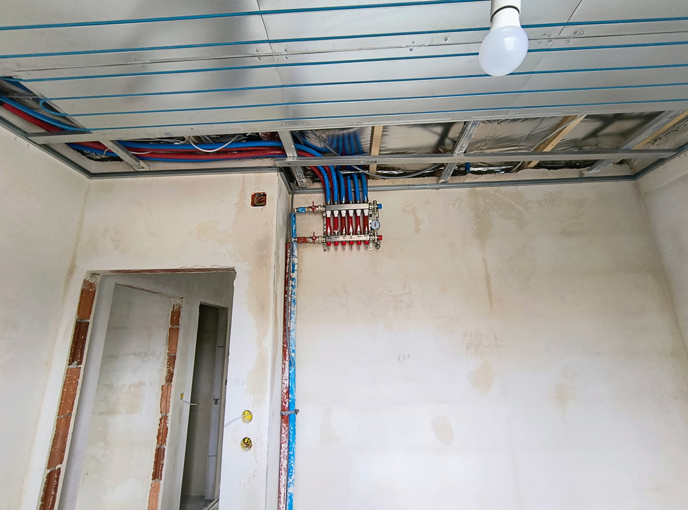
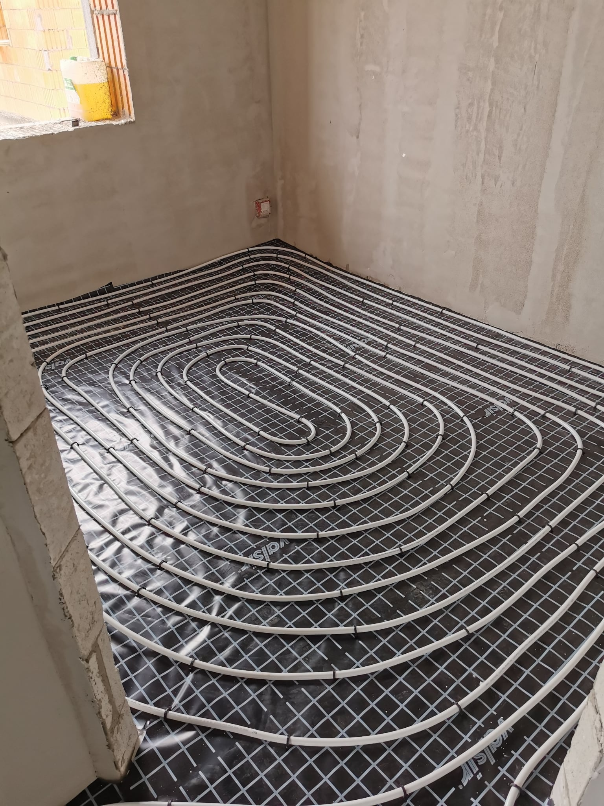
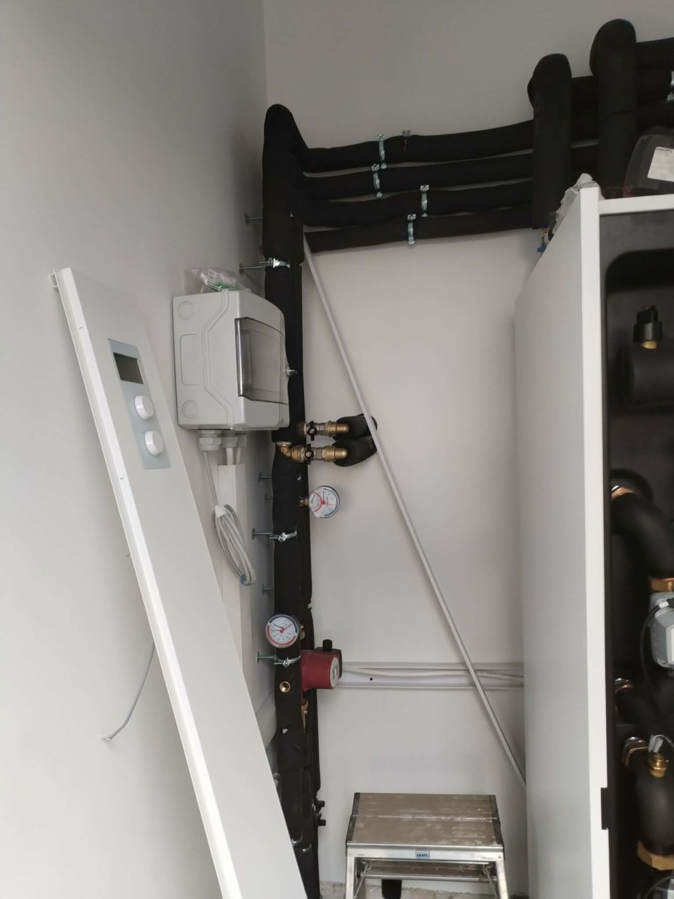
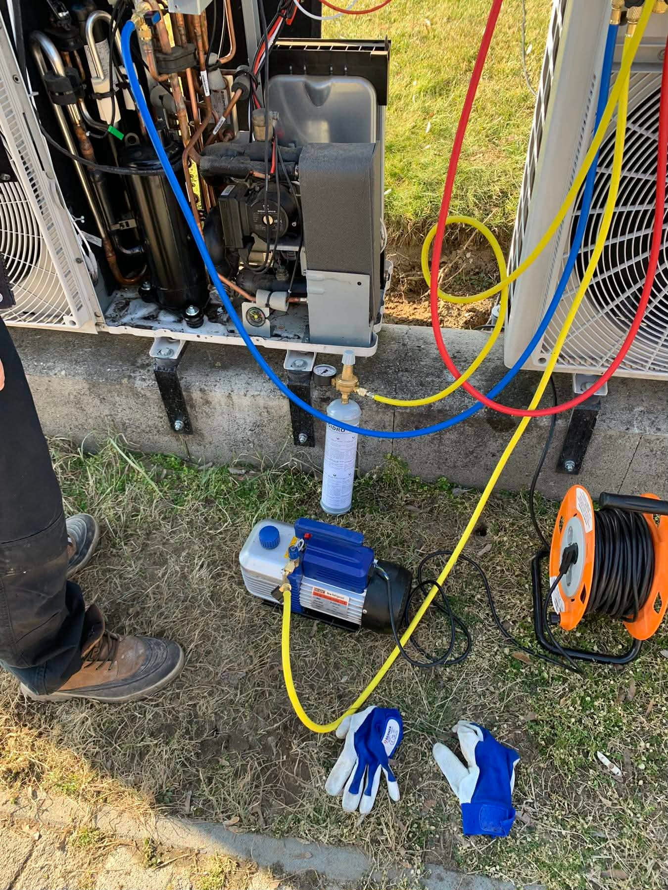
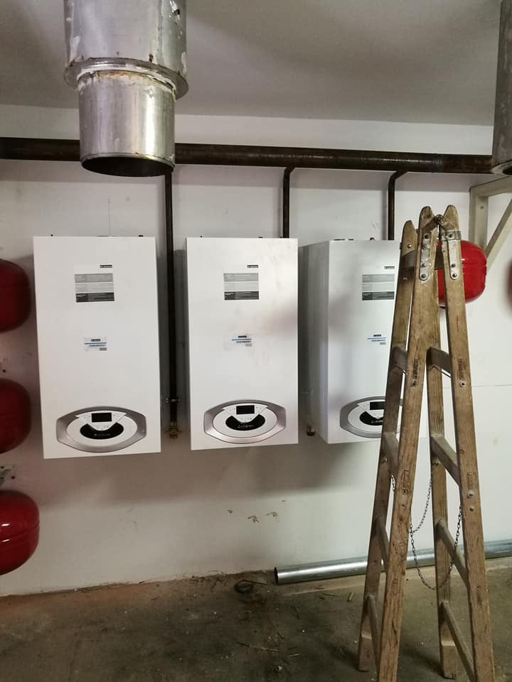

01
VRV klímarendszerek
Irodák, csarnokok, kereskedelmi objektumok részére
VRV klímarendszerek, hőszivattyú telepítés és szerviz, NGBS helyiségvezérlés, légtechnika — irodaházaknak, ipari csarnokoknak, kereskedelmi objektumoknak. Teljes műszaki dokumentációval, 2 év garanciával, Pest megye és Budapest területén.
Irodák, csarnokok, kereskedelmi objektumok részére
Telepítés, beüzemelés, garanciális és garancia utáni szerviz
Fűtés-hűtés, légtechnika, hőközpont, villamos szerelés
Valódi munkák, valódi eredmények — magánszemélyeknek és vállalkozásoknak egyaránt.

A csövek a gipszkarton mögött futnak, a mennyezet adja le a hőt és a hűtést. Nincs radiátor, nincs beltéri egység — csak egyenletes komfort az egész térben.

Ötrétegű (Valsir) csövekkel dolgozunk, hőtükör fóliára rögzítve. Egyenletes hőleadás, alacsony energiaigény — karbantartás nélkül, évtizedekig.

A hőszivattyú biztosítja a fűtést, hűtést és a használati melegvizet is. A telepítést, beüzemelést és beállítást teljes körűen elvégezzük.

Hibakeresés, javítás, újrahangolás. A rendszer működését helyreállítjuk, hogy üzembiztosan működjön tovább.

Régi gázkészülékek cseréje kondenzációs kazánra. A teljes folyamatot visszük: tervezés, kivitelezés, ügyintézés.
Márkák, amikkel dolgozunk
Tervezéstől kivitelezésig, beüzemeléstől karbantartásig — egy megbízható partner az egész folyamatra.
Ingyenes műszaki konzultáció — személyesen vagy telefonon. Ha kell, kimegyünk helyszíni felmérésre.
24 órán belül tételes, részletes árajánlat. Rejtett sorok nélkül — tudja előre, mire költ.
Egyeztetett határidőre, koordinált csapattal. Ha változás adódik, azonnal szólunk.
Teljes műszaki dokumentáció, garancialevél, beüzemelés. A munka ezzel nem ér véget — karbantartási szerződést is köthetünk.
Garanciális szervizigény esetén nem kell másik céget keresni. Mi vállaljuk — szerződésben rögzítve. A beépített berendezésekre a gyártó garanciája érvényes (2–5 év).
Ipari és kereskedelmi projekteknél az állásidő pénzbe kerül. Ezt mi is tudjuk. Ezért nem csúszunk — és ha mégis, azonnal szólunk.
Részletes, tételesen bontott árajánlat — rejtett sorok nélkül. Tudja előre, mire költ. Egyetlen telefonhívás vagy email elég az elindításhoz.
Adatlapok, garanciaokiratok, üzemeltetési útmutatók, as-built rajzok — minden munkához. Nem bónusz, hanem alapkövetelmény. Nálunk ez automatikusan jár.
Alvállalkozóként és főkivitelezőként egyaránt dolgozunk. Koordináció, dokumentáció, határidő — a mi felelősségünk. Egy pont, egy felelős.
A munka nem ér véget az átadással. Éves karbantartási szerződéssel biztosítjuk a rendszerek folyamatos üzemkészségét és megelőzzük a drága meghibásodásokat.
"A raktárcsarnokunkba VRV rendszert telepítettek — határidőre, teljes dokumentációval. A beüzemelés után azonnal működött, és azóta karbantartási szerződésünk is van velük."
"Irodaházunk klímarendszerének karbantartási szerződését velük kötöttük. Évente kétszer kijönnek, pontosak, és a garanciális szervizügyeket is intézik helyettünk."
"Kereskedelmi épületünkbe Daikin VRV rendszert és NGBS helyiségvezérlést telepítettek. A projekt összetett volt, de végig professzionálisan kommunikáltak, a dokumentáció hibátlan volt."
Professzionális gépészeti kivitelező irodák, ipari és kereskedelmi objektumok, valamint magánszemélyek számára — VRV klímarendszerektől hőszivattyúkon át NGBS helyiségvezérlésig.
2016 óta több mint 500 projektet valósítottunk meg Pest megye és Budapest területén. Referenciáink között irodaházak, kereskedelmi egységek, ipari csarnokok és lakóépületek egyaránt szerepelnek. Garanciális és garancia utáni szervizre egyaránt kötünk szerződést.
Generálkivitelezőkkel alvállalkozóként rendszeresen együttműködünk — koordináció, határidő és dokumentáció a mi felelősségünk. Minden munkához teljes műszaki dokumentációt adunk át. Távolabbi helyszínekre is kimegyünk — hívjon minket és megbeszéljük.
8+ év iparági tapasztalat, folyamatos továbbképzés
Határidő tartás, teljes dokumentáció, garanciavállalás
Nem egyszeri munka — hosszú távú karbantartási kapcsolat
Elsősorban Pest megye és Budapest — ipari parkokkal, irodaházakkal és kereskedelmi övezetekkel együtt. Távolabbi helyszínekre is vállalunk munkát egyeztetés alapján.
Nagyobb ipari vagy kereskedelmi projektek esetén az egész ország területén vállalunk munkát — egyeztetés alapján. Kérjen ajánlatot és megbeszéljük a részleteket.
Konzultációt kérekIrodaházakban, ipari csarnokokban, kereskedelmi egységekben, szállodákban, társasházakban és egyéb kereskedelmi ingatlanokban. Egyszeri telepítéstől a komplex, többszintes VRV rendszerek kivitelezéséig minden munkát vállalunk.
Igen — rendszeres karbantartási szerződéssel biztosítjuk a klímarendszerek és hőszivattyúk folyamatos üzemkészségét. Garanciális és garancia utáni szervizre egyaránt kötünk szerződést, Daikin, Panasonic, LG, Gree, TCL, Cascade, Aux klímákra és Cascade, Panasonic, Daikin, LG, Kospel hőszivattyúkra.
VRV rendszer akkor ideális, ha egyetlen kültéri egységről több helyiséget kell fűteni/hűteni (általában 3+ zóna). Alacsonyabb energiafogyasztás, helyiségenkénti szabályozás, egy kültéri egység — hosszú távon jelentős üzemeltetési megtakarítás. Telepítjük Daikin, Gree, Panasonic, LG és Cascade márkában.
Minden telepítési munkára 2 év munkagaranciát vállalunk. A beépített berendezésekre a gyártó garanciája érvényes (2–5 év). Garanciális szervizigény esetén is hívjon minket — vállaljuk a garanciális ügyintézést is.
Igen, minden kivitelezett munkához teljes körű műszaki dokumentációt és átadási dokumentumokat biztosítunk: beépített berendezések adatlapjai, garanciaokiratok, üzemeltetési útmutatók, esetenként as-built rajzok.
Klímarendszereknél évente legalább egyszer ajánlott (szűrőtisztítás, hűtőközeg-ellenőrzés, elektromos vizsgálat). Hőszivattyúknál szintén évi egy alkalom elegendő. Ipari és kereskedelmi rendszereknél féléves karbantartás javasolt az üzembiztosság fenntartásához.
Igen — generálkivitelezők mellé rendszeresen vállalunk gépészeti alvállalkozói munkát. Koordináció, határidő tartás és teljes dokumentáció a mi felelősségünk. Hívjon minket az egyeztetéshez: a projekt részletei alapján gyorsan tudunk ajánlatot adni.
Egyszeri klíma telepítéstől a több ezer négyzetméteres ipari csarnokok komplex VRV és légtechnikai rendszereiig vállalunk munkát. Referenciáink között 50 m²-es irodától 3000 m²-es ipari létesítményig szerepelnek projektek. A projekt méretétől függetlenül ugyanolyan dokumentációval és garanciával adunk át.
Klíma telepítés, hőszivattyú, padlófűtés, mennyezet fűtés-hűtés, kazáncsere — lakásba, házba. Minden elvégzett munkánkhoz vannak fotók, minden munkára 2 év garancia, minden munkáról papír. Nézze meg a referenciáinkat.
Szigetszentmiklós, Pest megye
Pest megye · Budapest · egyeztetés alapján távolabb is
Hétfő – Péntek: 8:00 – 17:00